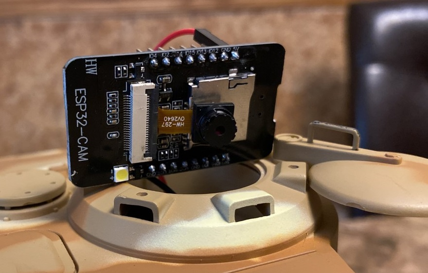

ESP32 Web-Cam
Requirements
- The ESP32 Web Cam shall have a fish-eye lens to improve angle visibility
- The ESP32 Web Cam shall have an antenna to reduce network lag
- The ESP32 Web Cam shall be powered from the 5V regulator located in the chasis
- The ESP32 Web Cam shall have a unique static ip address and port assigned for each tank
- The ESP32 Web Cam shall stream its output to a web-page
- The ESP32 Web Cam shall be located in the tank-commander's cupola
What you need to know:
- When this web-cam logs into the network, the router will tell it its ip address.
- Each web-cam will have its own port where the camera page is visible
- This port and ip address needs to be "port-forwarded" to the outside internet
Extra info
The arduino sketch contains the port for each web-cam and must be modified and "flashed" on each device.
This device requires a 3.3V power supply which comes from the chasis

Circuit Diagram